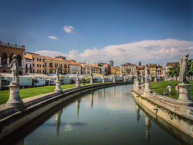

Result

你想走出这小小躯体的囚禁，走向别人，盼望着生命在那儿得到回应，心魂从那儿连接进无比巨大的存在，无线的时间因而不再是无线的冷漠......
从幼年一直到现在，我有过很多次失望————可能我也让别人有过这类失望————很多次深刻的失望其实都可以叫做失恋，无论性别，因为在那之前的热盼正都是爱的情感：
等待着他人的到来，等待着另外的心魂，等待着自由的团聚。虽因年幼，这热盼曾经懵然不知何名，但当有一天，爱的消息传来，我立刻认出那就是它，毫无疑问一直都是它。

All that city you just couldn't see an end to it.
The end? Please? Can you please just show me where it ends?
It wasn't what I saw that stopped me, Max, it was what I didn't see. Do you understand that? What I didn't see.
In all that sprawling city, there was everything except an end. There was no end.
Take a piano, hmm? The keys begin, the keys end. You know there are 88 of them. Nobody can tell you different. They are not infinite
You are infinite. And on those keys, the music that you can make is infinite.
One woman, one house, one piece of land to call your own, one landscape to look at, one way to die. All that world just weighing down on you. You don't even know where it comes to an end.
Land?Land is a ship too big for me. It's a woman too beautiful, it's avoyage too long, a perfume too strong, it's music I don't know how tomake.
Why why why why why... I think land people waste a lot of time wondering why. Winter comes they can't wait for summer; summer comes they're living dread of winter. That's why you're never tired of travelling, with chasing some place far away, where there's always summer. That doesn't sound like a good bet to me.
All that city. You just couldn't see the end to it. The end? Please? You please just show me where it ends? It was all very fine on that gangway. And I was grand too, in my overcoat. I cut quite a figure. And I was getting off. Guaranteed. There was no problem. It wasn't what I saw that stopped me, Max. It was what I didn't see. You understand that? What I didn't see. In all that sprawling city there was everything except an end. There was no end. What I did not see was where the whole thing came to an end. The end of the world...

And when they let you down You get up off the ground Cause morning rolls around And it’s another day of sun.
Without a nickel to my name Hopped a bus, here I came. Could be brave or just insane, we’ll have to see.
A little chance encounter… could be the one you’ve waited for.
Somewhere there’s a place… where I find who I’m gonna be.
Yes，all we’re lookin’ for is love from someone else. A rush A glance A touch A dance A look in somebody’s eyes…to light up the skies
Cause all that I need’s this crazy feeling. The rat-tat- tat of my heart. Think I want it to stay.
Here’s to the ones who dream Foolish as they may seem Here’s to the hearts that ache Here’s to the mess we make.
A bit of madness is key To give us new colors to see
People love what other people are passionate about!
Why do you say “romantic” like it’s a dirty word? I don’t know.That’s L.A. They just worship everything and they value nothing.
How are you gonna be a revolutionary if you’re such a traditionalist?
You’re holdin’onto the past, but jazz is about the future.
When you get this，you gotta give it everything you got. Everything.It’s your dream.
I am the phoenix from the ashes

Some of us get dipped in flat, some in satin, some in gloss.
But every once in a while you find someone who's iridescent, and when you do, nothing will ever compare.
The first day i met Bryce Loski, i flipped. It was those eyes, something in those dazzling eyes.
I had flipped, completely.
Sometimes a little discomfort in the beginning can save a whole lot of pain down the road.
I can’t stop thinking about her.
All my life I’ve been waiting for that kiss.I blessed a day I found you.
I want to stay around you. Now and forever, let it be me.

拝啓 有馬公生様 さっきまで一绪にいた人に手紙を書くのは 変な感じです 君はひどい奴です クズ、のろま、あんぽんたん 君を初めて見たのは、5つの時 当时通ってたピアノ教室の発表会でした ぎごちなく登場したその子は 椅子にお尻をぶつけて笑いを誘い 大きすぎるピアノに向かい 一音を奏でたとたん 私の憧れになりました 音は24色パレットのようにカラフルで メロディは踊りだす 隣の子が泣き出したのはびっくりしました それなのに、君はピアノを辞めるんだもの 人の人生を左右しといて、ひどい奴です...... 私は君の心に住めたかな? ちょっとでも、私のこと思い出してくれるかな? リセットなんかいやだよ やっぱり、君で良かった
< 1 2 3 4 5 6 ... 9 >